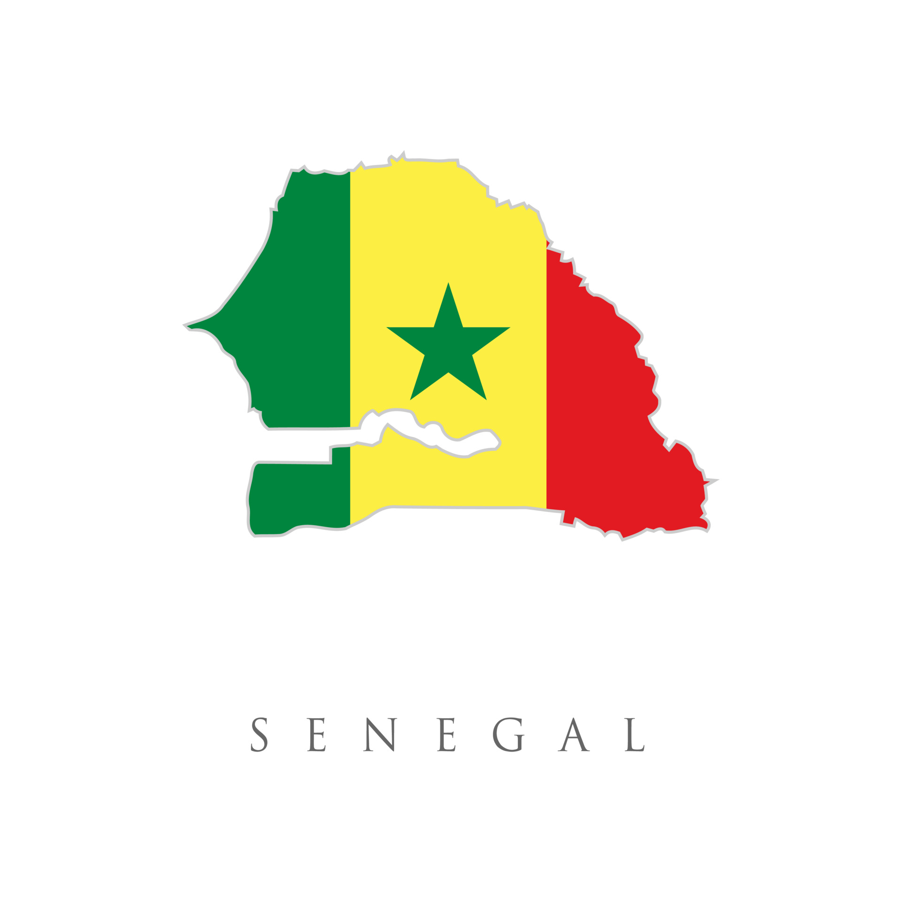
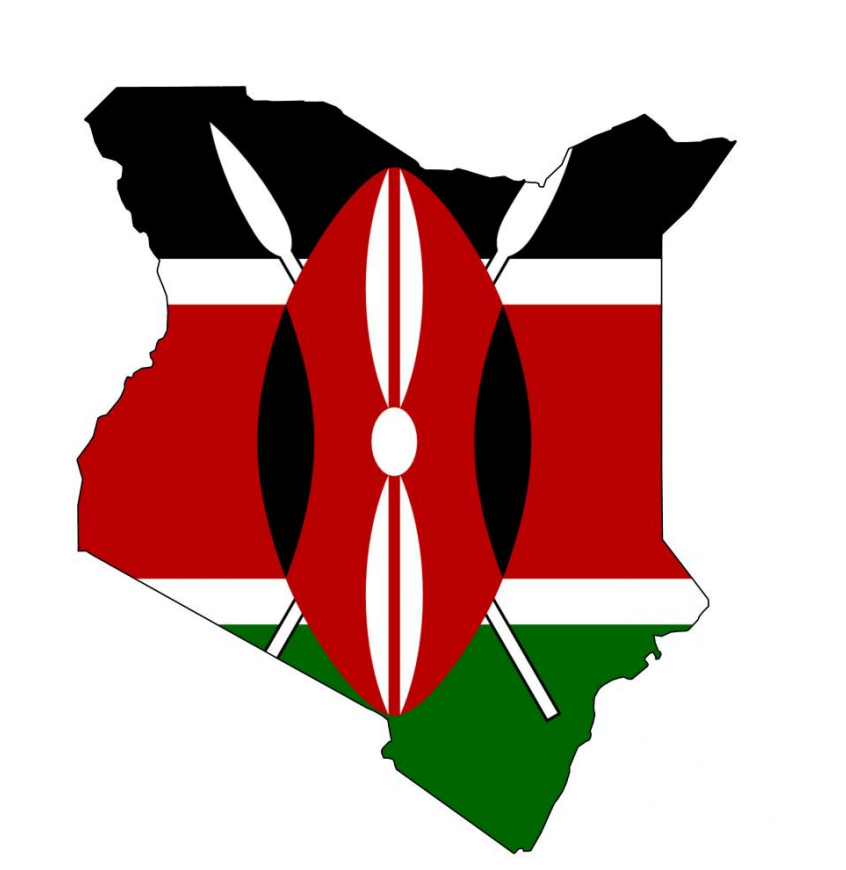

SENEGAL
POTENTIEL ENERGETIQUE
- D’un des meilleurs potentiels solaires du monde, avec en moyenne 5,5 kWh/m²/jour au sol d’énergie solaire brute.
- Niveau d’insolation annuelle : 394 milliers de milliards kWh ou encore de 33 830 000 000 TEP (tonnes équivalent pétrole).
- 15 millions de fois la consommation d’énergie totale du pays ; « La faible consommation d’énergie du pays, combinée au gisement solaire disponible offre au Sénégal l’opportunité de devenir facilement et rapidement, autonome en énergie ».
- Dakar reçoit presque 2 fois plus d’ensoleillement que Paris, quand un Sénégalais consomme 20 fois moins d’énergies primaire qu’un Français. En outre,
- La consommation électrique moyenne d’un Sénégalais étant de 210 kWh/an, en théorie, un système photovoltaïque de 150W par personne suffirait donc à couvrir tous les besoins électriques de la population du pays
- La répartition de l’ensoleillement dans l’année représente un autre avantage dont le pays pourrait profiter (ensoleillement stable tout au long de l’année)
INVESTISSEMENTS
-
Le plan d'accès universel à l'électricité à l'horizon 2025 du gouvernement du Sénégal
Grace a ce plan, le gouvernement Sénégalais prévoit 100 % de couverture des villages non électrifiés et un taux d'accès de 85% en 2023, précise Sécou Sarr, le directeur d'Enda Energie. L'organisation s'occupe des questions d'accès à l'énergie durable, à la résilience et à l'autonomisation des populations et des écosystèmes face aux impacts environnementaux. "Nous avons développé avec l'appui de l'Union européenne, un programme qui articule l'énergie solaire et la chaîne de valeur dans le cadre d'une des grandes initiatives qu'on avait nommées SESA (Souveraineté Energétique pour la Souveraineté Alimentaire). On considère que si on doit assurer la souveraineté alimentaire, il faut une maîtrise de l'énergie parce que quand on maîtrise l'énergie, on maîtrise facilement les autres aspects notamment, la maîtrise de l'eau. Et sans eau, on ne peut pas faire de l'agriculture. C'est ce qu'on est en train de promouvoir aujourd'hui en matière d'accès à l'énergie notamment pour les usages productifs." D'après les statistiques, le taux d'électrification rurale du Sénégal avoisine les 42%, a indiqué le directeur d'Enda Energie. Au moins 13.000 villages restent à électrifier sur les plus de 21.000 que compte le pays. La vision du Sénégal est de devenir le leader des énergies vertes en Afrique de l’Ouest et pour atteindre ses objectifs le gouvernement kenyan a lancé plusieurs projets , dont :

-
Senergy 2
Lancé le 22/10/2016, le projet Senergy 2 est la plus grande centrale solaire d’Afrique de l’Ouest avec 75 000 panneaux photovoltaïques produisant 20 mégawatts (MW),
-
Centrale de Malicounda
C’est une nouvelle centrale, riche de 11 000 panneaux supplémentaires et produisant 22 MW d’énergie solaire, a vu le jour à Malicounda. La technologie adoptée par le groupe italien Solaria permet la conversion directe des rayons du soleil en électricité, pour e.g. fournirachaque année 22 MW au réseau national (= consommation d’environ 9 000 concessions). Le but est de développer le mix énergétique, avec l’option de faire de l’énergie propre pour réduire dans un futur proche le coût du kWh et fournir aux Sénégalais de l’énergie électrique en qualité/quantité ; cela selon une option où « le solaire jouera un rôle important avec des coûts de production de plus en plus compétitifs» (possibilité de combler le gap énergétique % besoins - aujourd’hui: 45 % des Sénégalais n’ont pas accès à l’électricité : 20 % dans les villes, 60 % en zones rurales). L’objectif visé esr d’avoir une puissance totale du parc énergétique de 573 MW (2011-2012) a 821 MW (2017) puis a 1 264 MW (2019)
-
Projets en pipeline ou chantier
Santhiou Mékhé (région de Thiès) 29,5 MW; Kahone (région de Kaolack) 20 MW; Sakal (région de Louga) 20 MW; Dias (région de Dakar) 15 MW. Soit au total 113,5 MW qui viendront s’ajouter aux 821 MW existants.
-
Parc éolien de Taïba Ndiaye
En plus du solaire, il faudra compter avec la production de 150 MW du futur parc éolien de Taïba Ndiaye. Cette augmentation en capacité énergétique permettra aussi, sans doute, de diminuer le coût de l’électricité pour les foyers sénégalais qui paient aujourd’hui l’une des factures d’électricité les plus élevées de la sous-région (environ 120 CFA = 0,18 Euros le kWh, soit le double du kWh ivoirien).
"Ici, nous sommes en Afrique et on a quelque chose qui est à profusion et qui est le soleil." Cette observation d'Adama Ndour, jeune Dakaroise employée dans une entreprise d'installation de panneaux solaires est un secret de polichinelle, selon Boubacar Touré, spécialiste des énergies renouvelables à Dakar. Il confirme que le Sénégal dispose d'énormes potentialités en matière d'énergies renouvelables : le solaire, l'éolienne, la biomasse, la marémotrice, 700 km de côte et un ensoleillement sur presque toute l'année. "D'un point de vue institutionnel, il faut reconnaître que l'Etat du Sénégal a fait d'énormes efforts. Ils sont inscrits dans un programme de mix énergétique. Ils sont aussi dans les ODD (Objectifs pour un Développement Durable) qui prônent l'utilisation d'une large part des énergies renouvelables dans la production énergétique du pays. Et ils ont fait aussi une législation fiscale pour l'entrée des produits solaires au Sénégal."
-
Agence de Promotion des Investissements et Grands Travaux (APIX)
C’est une société privée dont l'Etat du Sénégal est le principal actionnaire. Son objectif principal est de promouvoir l'investissement au Sénégal, tant auprès des entreprises locales qu'internationales. L'APIX apporte son soutien à toutes les démarches administratives nécessaires à la création d'une entreprise au Sénégal ainsi qu'à la demande des différents avantages apportés par le gouvernement pour la création de nouvelles entreprises au Sénégal. L'APIX contribue également à la recherche et à l'identification de partenaires locaux.
-
Les IPP
Outre la compagnie nationale, Société nationale d’électricité du Sénégal (SENELEC), le marché de l’énergie du pays est constitué de centrales industrielles privées et de centrales électriques intégrées. Les IPP représentent environ la moitié de la capacité de production nationale et sont nécessaires pour fournir toute l'électricité à SENELEC en tant que seul acheteur et vendeur d'électricité en gros au réseau. La première centrale thermique du Sénégal a été mise en service en 2000 (52 MW), suivie d’une deuxième en 2008. Les IPP ont eu des résultats mitigés dans le pays en raison de l'instabilité du réseau, de la qualité du carburant et d'autres problèmes techniques.
Politiques reglementaires en vigueur
- La Société Nationale d’Électricité du Sénégal (SENELEC) : C’est la compagnie nationale d’électricité publique. Elle détient le monopole du transport et de la distribution de l'électricité. Ce service public possède également environ la moitié de la capacité de production. L'entreprise a connu plusieurs phases de privatisation. L’Agence Sénégalaise d’Électrification Rurale (ASER) est responsable de l’électrification rurale du Sénégal et gère les programmes pertinents tels que le Programme Prioritaire d’Électrification Rurale (PPER) et l’Initiative d’Électrification Rurale Locale (ERIL). Elle construit des projets et fournit également des services EPC.
- Le ministère du Pétrole et des Énergies (ministère du Pétrole et de l'Énergie) (anciennement le ministère de l'Énergie et du Développement des énergies renouvelables) : C’ est l'entité responsable de l'ensemble du secteur de l'énergie et dirige l'élaboration et la mise en œuvre de politiques et de stratégies.
- L’Agence Nationale pour les Energies Renouvelables (ANER) : Elle a été créée pour prendre en charge la promotion et le développement de ces énergies alternatives, sous toutes leurs formes : l’énergie solaire, l’énergie éolienne, la biomasse, la marée motrice et la petite hydraulique. L’ambition du Gouvernement dans ce cadre est de porter à 20% en 2017, la contribution des énergies renouvelables dans le bilan énergétique national qui est actuellement de l’ordre de 0,6 % et de soutenir la recherche et la coopération pour assurer leur ancrage dans les activités économiques du pays.
- La loi de 1998 sur l'électricité (modifiée en 2002) a ouvert le secteur de l'énergie à la participation du secteur privé, en introduisant un système de licences et de concessions pour la production, la distribution et la vente au détail. Tous les systèmes dont la capacité est inférieure à 50 kVA sont exemptés des dispositions de la loi.
- Le décret n° 98-334 du 24 avril 1998, dans le cadre de la loi de 1998 sur l'électricité, fixe les conditions de délivrance et de retrait des licences ou concessions pour la production, la distribution et la vente au détail de l'électricité.
- La loi sur les énergies renouvelables (loi n° 2010-21) qui réglemente le secteur des énergies renouvelables et prévoit des allégements fiscaux, l'accès au réseau et des tarifs de rachat. Le Gouvernement du Sénégal a mis en place cette politique pour « rechercher des solutions alternatives à ses problèmes d’approvisionnement en énergie, en favorisant, dans ce cadre, le développement des énergies renouvelables au moyen de la diversification des sources de production ».
- Le décret 2011-2013, dans le cadre de la loi de 2010 sur les énergies renouvelables, précise les exigences de raccordement au réseau des centrales d'énergie renouvelable et les conditions d'achat d'électricité auprès de ces centrales.
- Commission de régulation de l'énergie Infos sur la comission nationale de régulation
- Tarifs de rachat (FIT)
Risques et difficultes
- Le prix des panneaux baisse régulièrement depuis 2008 (niveaux très bas aujourd’hui)
- Les onduleurs et régulateurs, comme de nombreux appareils électroniques, voient leur prix baisser petit à petit.
- Seules les batteries restent chères
- Accessibilité croissante des systèmes solaires en site isolé; sans etre à la portée de toutes les bourses à cause des batteries
- Prix du KWh produit avec 1 système solaire autonome (entre 200 et 300 FCFA/kWh)